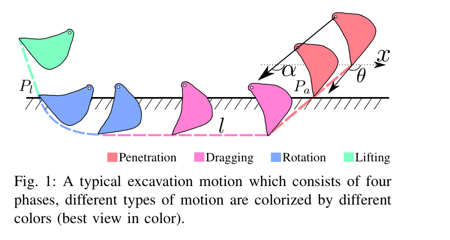
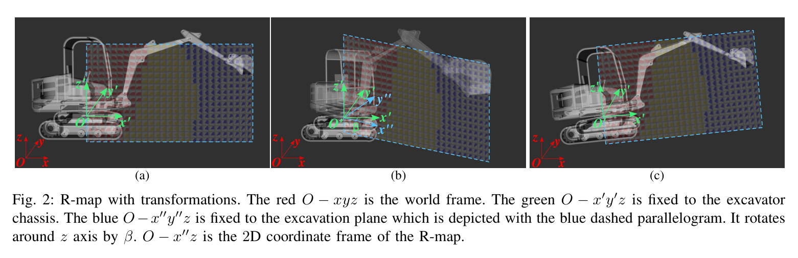
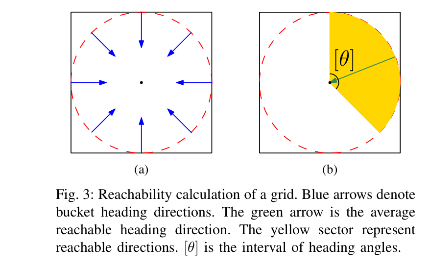
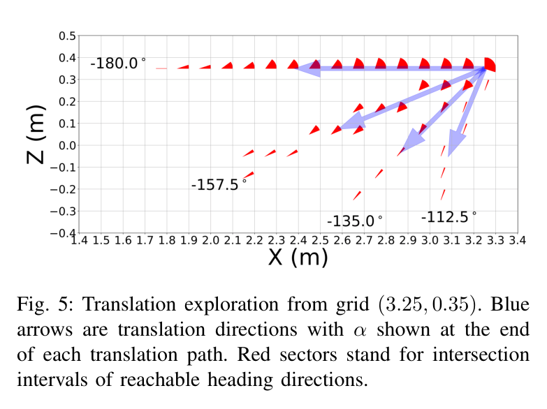
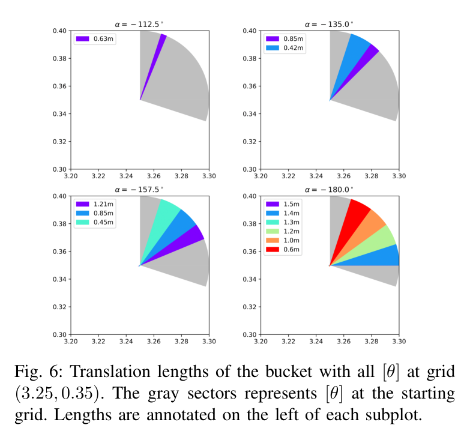
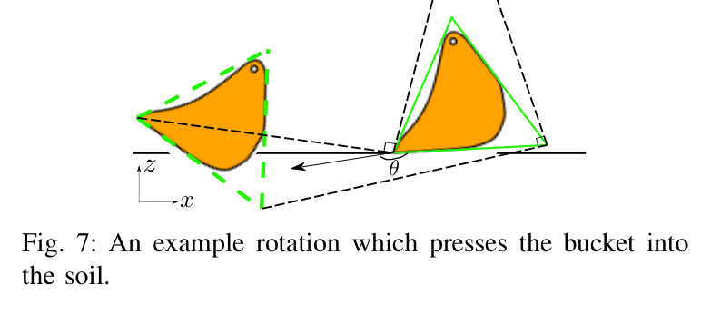
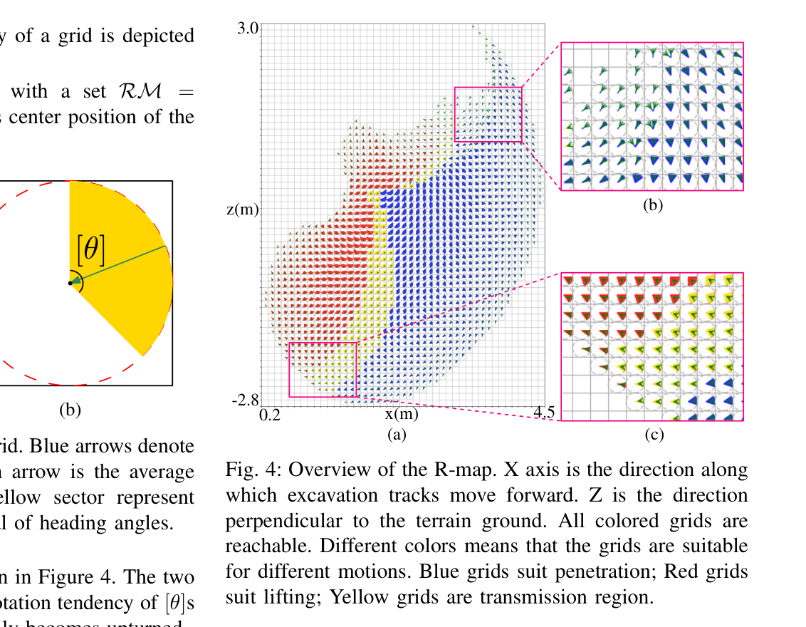
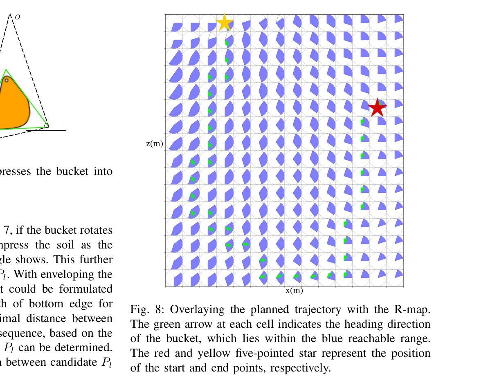
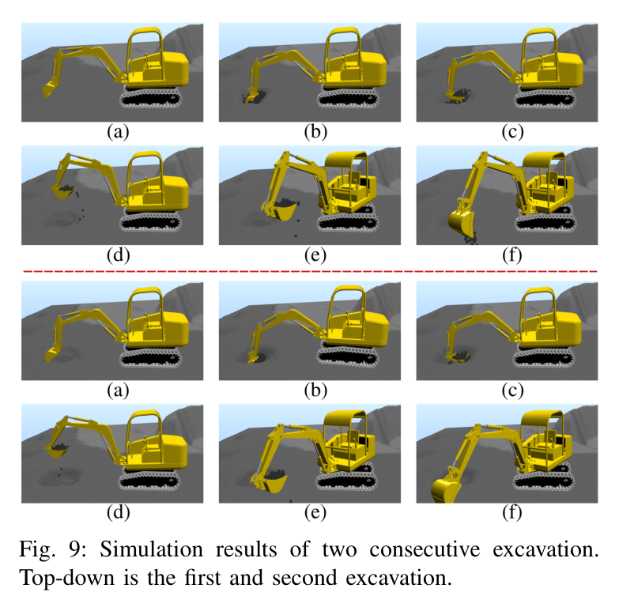

Compact Reachability Map for Excavator Motion Planning
Yajue Yang, Liangjun Zhang, Xinjing Cheng, Jia Pan, Ruigang Yang
한줄 요약 — Compact R-map은 각 굴착평면 격자에 역기구학으로 얻은 버킷 헤딩 구간과 이동방향별 최대 직선거리를 저장한다. 현재 height map과 접근점으로 침투·드래그·회전·인양의 full-bucket 경로를 빠르게 조립해 후속 동역학 최적화에 기구학적 초기해를 제공한다.
1.연구 배경 및 동기
고차원 굴착 궤적 탐색을 2D 도달성 조회 문제로 압축
굴착 한 사이클은 침투, 드래그, 회전, 인양으로 구성되며 버킷 경로가 지형 변형과 굴착량을 직접 결정한다. 그러나 동일한 full-bucket 목표에도 깊은 침투 뒤 즉시 회전하거나 얕게 들어가 길게 끄는 등 많은 후보가 있다. 접근점, 각 단계의 6차원 이동방향과 길이, 인양 시작점, 전 경로의 헤딩열을 모두 탐색하면 차원이 매우 커진다. 유압 비선형과 토양력 때문에 실제 제어도 어렵지만, 대부분의 제어기는 먼저 실행 가능한 위치 또는 힘 궤적을 요구한다. 논문은 이 초기 궤적을 온라인에서 빠르게 찾기 위해 버킷의 전역 기구학 가능성을 사전 계산한다.
핵심 관찰은 붐·암·버킷의 기본 굴착운동이 하나의 excavation plane에 놓인다는 점이다. 저자들은 3D workspace 전체를 저장하지 않고 이 평면을 2D 격자로 이산화한다. 각 격자에는 가능한 버킷 헤딩 구간과 그 헤딩을 유지하며 특정 방향으로 직선 이동할 수 있는 최대 길이를 저장한다. 차체 cabin 회전이나 경사면의 base 자세는 좌표계 강체변환으로 다룬다. 온라인 계획기는 현재 height map과 접근점을 받아 사전 계산된 표를 조회하고 네 굴착 단계를 조립하므로, 고차원 역기구학 탐색을 짧은 검색과 보간 문제로 바꾼다.

원문 Figure 1 · PDF p.1 — Fig. 1: A typical excavation motion which consists of four phases, different types of motion are colorized by different colors (best view in color).

원문 Figure 2 · PDF p.2 — Fig. 2: R-map with transformations. The red O −xyz is the world frame. The green O −x′y′z is fixed to the excavator chassis. The blue O−x′′y′′z is fixed to the excavation plane which is depicted with the blue dashed parallelogram. It rotates around z axis by β. O −x′′z is the 2D coordinate frame of the R-map.
선행 연구의 한계
제어·힘제어 방법도 실행할 guidance bucket trajectory가 먼저 필요하다.
접근각·높이·거리만 최적화하면 실행 가능 궤적공간의 일부만 탐색한다.
일반 3D reachability map은 굴착의 평면 구조를 활용하지 않아 크다.
자세 도달성만으로는 같은 헤딩의 직선 이동 가능거리를 알 수 없다.
이 연구의 기여
2D 위치별 도달 헤딩을 저장하는 compact R-map을 제안했다.
헤딩구간 집합연산으로 방향별 최대 직선 이동길이를 사전 등록했다.
R-map 조회로 네 굴착 단계를 조립해 AGX에서 평균 50 ms 계획을 시연했다.
2.방법론 및 시스템 구성
R-map 생성은 굴착기 CAD 링크 치수와 관절한계를 입력으로 한다. 굴착평면을 작은 격자로 나누고, 각 격자의 내접원 위에 버킷 원점을 균등 배치하면서 헤딩이 격자 중심을 향하는 pose를 만든다. 각 pose에 역기구학을 적용해 해가 있으면 해당 격자를 reachable로 표시한다. 한 격자에서 가능한 헤딩은 하나의 각도구간 또는 self-collision과 기구학 한계로 분리된 여러 구간의 합 [θ]로 저장된다.
직선 이동 능력은 translation direction α마다 계산한다. 시작 격자에서 α 방향의 다음 격자로 이동하며, 지금까지 지난 모든 격자의 reachable heading interval 교집합을 갱신한다. 교집합이 비거나 맵 경계를 넘으면 탐색을 멈춘다. 연속 교집합들의 차집합은 특정 헤딩이 어디까지 유지될 수 있는지를 나타내므로, 시작격자에서 그 지점까지 거리를 최대 이동길이로 저장한다. 결과적으로 각 격자는 CT_i={(α_j,L_j)} 형태의 translation capability table을 가진다.
온라인 계획은 접근점 P_a와 현재·목표 height map을 받아 penetration, dragging, rotation, lifting을 순서대로 구성한다. 침투방향은 지표 법선과 정렬되고 버킷 면이 토양을 누르지 않도록 고른다. 예상 swept soil volume으로 침투와 드래그 길이를 정하고, 드래그는 각 격자의 [θ] 안에서 헤딩 변화가 작고 단조롭도록 보간한다. 회전·인양은 토사가 쏟아지지 않도록 수직 부근의 방향을 고르고, 버킷 외접 삼각형과 지면의 최소간격으로 회전 시작 높이를 정한다.
처리 파이프라인
1
굴착평면 좌표화
붐·암·버킷의 2D 평면을 정의하고 cabin 회전과 base 경사는 좌표계 강체변환으로 분리한다.
2
pose 샘플링
평면 격자의 내접원 표본에서 중심을 향하는 버킷 heading pose를 생성한다.
3
IK 도달성
IK와 self-collision·관절한계를 검사해 reachable heading을 하나 이상의 구간 [θ]로 저장한다.
4
직선 탐색
방향 α로 격자를 진행하며 [θ] 교집합이 비거나 경계에 닿을 때까지 경로를 추적한다.
5
거리 추출
연속 교집합의 차집합으로 heading별 최대거리 L을 구해 CT_i에 등록한다.
6
침투 선택
지표 법선과 맞고 α_p≥θ_p인 후보를 고른 뒤 예상 굴착량으로 침투·드래그 길이를 정한다.
7
드래그 보간
격자 도달구간 안에서 인접 heading 변화 제곱합을 최소화하며 단조 회전하게 한다.
8
회전·인양
heading을 수직 부근으로 제한하고 버킷-지면 간격을 확보한 시작점에서 경로를 보간한다.
9
지형 갱신
AGX 실행 뒤 갱신된 2.5D height map을 다음 굴착 입력으로 사용한다.
원문 수식과 의미
격자별 도달 헤딩 R-map
RM=\{G_i\}=\{(P_i,[\theta]_i)\}
격자 중심 P_i마다 IK가 가능한 버킷 heading의 하나 또는 여러 각도구간 [θ]_i를 저장한다. 원문 PDF 3쪽.
방향별 translation capability
CT_i=\{(\alpha_j,L_j)\}
격자 i에서 샘플 이동방향 α_j와 reachable heading별 최대 직선 이동길이 집합 L_j를 등록한다. 원문 PDF 3쪽 Algorithm 1~2 설명.
드래그 헤딩 보간
\min \sum_i\|\theta_{i+1}-\theta_i\|^2
R-map의 도달구간 안에서 인접 heading 변화가 작고 매끄러운 dragging 경로를 찾는 목적함수다. 원문 PDF 4쪽 식 (1).
헤딩이 한 방향으로 부드럽게 회전하고 각 격자의 reachable interval을 벗어나지 않게 한다. 원문 PDF 4쪽 식 (2)~(4).
회전 지면간격
l\sin\theta+z>\epsilon
버킷을 감싸는 삼각형의 bottom edge가 회전 중 지면을 누르지 않도록 회전 시작점 높이를 제한한다. 원문 PDF 5쪽.

원문 Figure 3 · PDF p.3 — Fig. 3: Reachability calculation of a grid. Blue arrows denote bucket heading directions. The green arrow is the average reachable heading direction. The yellow sector represent reachable directions. [θ] is the interval of heading angles.

원문 Figure 5 · PDF p.4 — Fig. 5: Translation exploration from grid (3.25, 0.35). Blue arrows are translation directions with α shown at the end of each translation path. Red sectors stand for intersection intervals of reachable heading directions.

원문 Figure 6 · PDF p.4 — Fig. 6: Translation lengths of the bucket with all [θ] at grid (3.25, 0.35). The gray sectors represents [θ] at the starting grid. Lengths are annotated on the left of each subplot.

원문 Figure 7 · PDF p.5 — Fig. 7: An example rotation which presses the bucket into the soil.
3.핵심 기술
3D의 2D 압축
굴착평면만 저장하고 cabin·base 자세는 좌표변환으로 처리해 위치와 heading interval의 작은 map을 만든다.
세 좌표계
2D 위치+heading
모델별 1회 계산
구간 자세 도달성
격자마다 IK 가능한 heading 전체를 분리구간까지 보존해 침투용·인양용 영역을 구분한다.
침투의 법선, 드래그의 굴착량·smoothness, 인양의 토사유실·간격 제약을 R-map 위에서 연결한다.
길이 공동 결정
heading 보간
회전 clearance
height map 반복
한 번 굴착 뒤 바뀐 2.5D 지형을 다시 입력하되 사전 R-map은 반복 재사용한다.
map 고정
terrain 갱신
연속굴착 시연

원문 Figure 4 · PDF p.3 — Fig. 4: Overview of the R-map. X axis is the direction along which excavation tracks move forward. Z is the direction perpendicular to the terrain ground. All colored grids are reachable. Different colors means that the grids are suitable for different motions. Blue grids suit penetration; Red grids suit lifting; Yellow grids are transmission region.

원문 Figure 8 · PDF p.5 — Fig. 8: Overlaying the planned trajectory with the R-map. The green arrow at each cell indicates the heading direction of the bucket, which lies within the blue reachable range. The red and yellow five-pointed star represent the position of the start and end points, respectively.
4.실험 결과
실험 환경·장비·데이터
boom 2.00 m, stick 1.05 m, bucket 0.60 m, base height 0.35 m의 굴착기 CAD 모델을 사용했다.
R-map 격자는 0.1 m×0.1 m, translation direction의 회전 해상도는 0.1π로 설정했다.
한 접근점과 목표 굴착량에서 침투·드래그·회전·인양의 bucket pose를 검색하고 각 heading이 R-map 허용구간 안에 있는지 확인했다.
AGX에서 두 번 연속 굴착하며 네 단계를 실행하고 각 사이클 뒤 새 height map으로 다시 계획했다.
사용자가 폭·높이·깊이를 지정한 직사각 trench를 반복 굴착해 최종 지형이 목표 height map에 가까워지는지 시연했다.
비교 기준
별도 외부 motion planner와 정량 비교는 없다.
R-map이 지정한 reachable heading range와 실제 계획 bucket heading의 포함관계를 내부 실행가능성 기준으로 확인했다.
평가 지표
R-map 오프라인 생성시간
단일 굴착 온라인 계획시간
계획 heading의 reachable interval 만족 여부
버킷 적재와 목표 height map 형상 접근
연속 굴착 실행 가능성

원문 Figure 9 · PDF p.6 — Fig. 9: Simulation results of two consecutive excavation. Top-down is the first and second excavation.
핵심 결과 해석
0.1 m 격자와 0.1π 방향 해상도의 R-map은 표준 컴퓨터에서 평균 7.0분에 생성되었다. 장비 기구학마다 한 번 수행하는 offline 비용이다. 위치에 따라 reachable heading이 위로 회전했고, downward heading이 가능한 blue 영역은 침투에, 거의 모두 위를 향하는 red 영역은 인양에 적합했다.
계획된 bucket heading은 각 격자의 reachable range 안에 있었고 단일 굴착 계획은 평균 50 ms였다. AGX의 두 연속 굴착은 네 단계를 수행했으며 논문은 각 진행에서 최대 bucket load를 달성했다고 기술한다. 직사각 trench도 목표 height map에 가까워졌지만 적재량·형상오차·반복 수·실패율 수치는 없다.
강점은 짧은 조회시간과 명시적 기구학 가능성이다. 그러나 토크·토양 저항·유압 추종은 정량 비교하지 않았으므로 50 ms는 기구학 경로 검색시간이지 완전 동역학 계획시간이 아니다.
정량 결과
평가 항목
정량 결과
조건·맥락
원문 근거
R-map 격자 해상도
0.1 m × 0.1 m
2D excavation plane discretization
PDF p.5
translation direction 해상도
0.1π rad
방향별 직선이동 능력 계산
PDF p.5
R-map 생성시간
평균 7.0 min
표준 컴퓨터, 주어진 굴착기 모델에 대해 offline 1회
PDF p.5
단일 굴착 계획시간
평균 50 ms
사전 계산 R-map을 조회한 online full-bucket planning
PDF p.6
boom 길이
2.00 m
실험 굴착기 CAD 모델
PDF p.5
stick 길이
1.05 m
실험 굴착기 CAD 모델
PDF p.5
bucket 길이
0.60 m
실험 굴착기 CAD 모델
PDF p.5
base 높이
0.35 m
실험 굴착기 CAD 모델
PDF p.5
실패 사례와 경계조건
R-map상 가능한 경로도 토크 한계나 토양 저항 때문에 실제 장비에서 실행 불가능할 수 있으나 현재 planner는 이를 검사하지 않는다.
계획은 2D excavation plane과 2.5D height map을 전제로 하므로 측방 버킷 운동이나 복잡한 3D 지형 변형을 직접 표현하지 않는다.
AGX에서 full bucket과 목표 trench 접근을 시연했지만 적재량·형상오차·실패율이 수치로 보고되지 않아 성능 범위를 정량화하기 어렵다.
실제 센서로 height map을 만들고 갱신하는 과정과 유압굴착기의 추종오차는 검증하지 않았다.
5.한계 및 향후 연구
현재 한계
주로 기구학 제약만 고려하고 actuator torque limit, 토양 저항과 유압 동역학을 계획에 포함하지 않는다.
검증이 AGX Dynamics 시뮬레이션에 머물고 실제 굴착기 하드웨어 결과가 없다.
굴착을 단일 2D 평면으로 제한해 측방 운동과 복합 3D 작업을 표현하지 못한다.
초기·갱신 height map이 주어진다고 가정하며 센서오차·가려짐·지형추정 지연을 다루지 않는다.
외부 planner baseline, 반복 수, 계획 실패율, bucket load와 목표지형 오차의 정량값이 없다.
향후 연구
R-map의 기능영역을 상위 task planning과 optimal base placement에 사용해 차체 이동을 줄인다.
실제 굴착기에서 센서 기반 height map, 유압 추종, 토양 변화와 연속 굴착을 검증한다.
토크·유압압력·실행 성공 데이터를 이용해 격자별 기구학 도달성을 실제 실행 가능도로 온라인 보정한다.
6.한마디로 정리
핵심 방법은?
2D 격자마다 IK 가능한 버킷 헤딩과 방향별 최대 직선거리를 사전 계산하고, height map에서 침투·드래그·회전·인양 경로를 조회·보간한다.
핵심 결과는?
0.1 m 격자 R-map은 평균 7분에 offline 생성되고, AGX에서 기구학적으로 가능한 단일 full-bucket 궤적을 평균 50 ms에 계획했다.
한계는?
토크·토양력·유압 동역학, 센서 기반 지형추정과 실차 검증이 없고 2D 평면·시뮬레이션에 한정된다.
#작업·궤적계획#시스템통합·현장실증#Compact R-map#역기구학#격자 기반 도달가능성 사전계산
나의 의견 / 우리 연구와의 연관성
Compact R-map은 자율굴착기의 빠른 feasibility layer로 유용하다. 상위 계획기가 고른 공격점과 목표 체적을 받으면 50 ms 수준에서 기구학적으로 가능한 네 단계 경로를 제공해, 후속 토크 최적화나 MPC의 초기해로 넘길 수 있다. 장비마다 한 번 계산한 map을 반복 사용하는 구조는 실시간성이 중요한 현장 시스템에 맞는다.
다만 현장 실행가능성은 관절각만으로 결정되지 않는다. 격자·헤딩·이동거리마다 실제 유압압력, 토크 한계, 토질, slip과 추종성공을 축적해 R-map을 동역학적 cost map으로 확장해야 한다. 또한 전체 토공에서는 base placement와 굴착 순서를 함께 골라 차체 이동과 잔여 토량을 최소화해야 한다.
상위 task planner의 공격점을 R-map으로 즉시 거부·수정해 실행불가능 목표를 하위 제어기로 보내지 않을 수 있다.
50 ms 기구학 경로를 최소토크 궤적 최적화의 warm-start로 사용하면 비선형 solver의 탐색부담을 줄일 수 있다.
침투·인양 기능영역은 굴착기 base와 덤프트럭 배치를 정하는 작업공간 휴리스틱이 된다.
온라인 관절압력·토크·실패 로그로 CT_i를 보정하면 토질과 장비상태를 반영한 적응형 R-map으로 발전할 수 있다.
센서 기반 height map의 불확실도를 격자 도달성에 전파해 보수적 회피와 재관측 조건을 정의해야 한다.
7.전체 그림·표
본문 핵심 위치에 배치하지 않은 원문 Figure와 Table을 원문 페이지 순서로 수록한다.